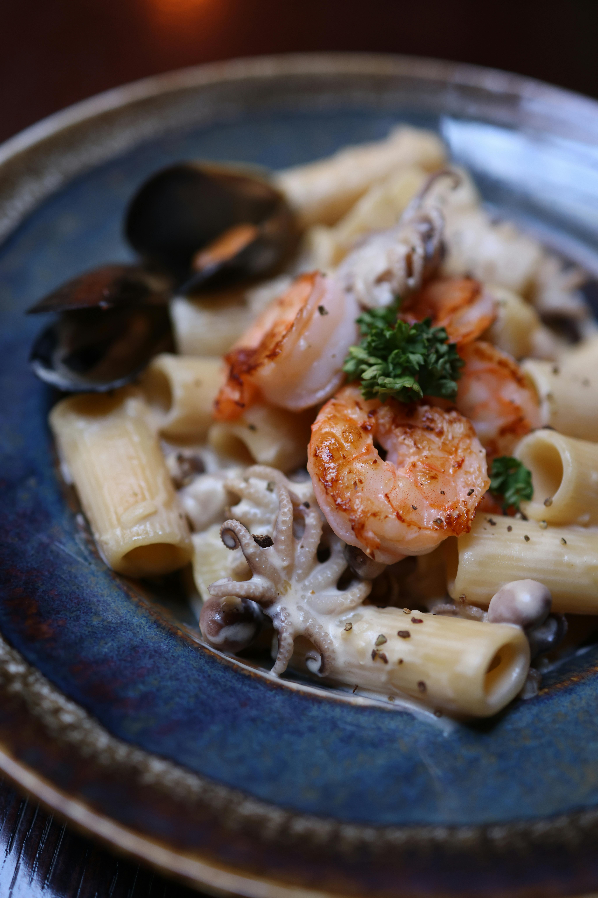

A Culinary Journey
From the elegant ocean-view fine dining of The Beach House to the laid-back beachfront vibe of The Sand Bar, our chefs craft locally sourced seafood, fresh salads, and innovative cocktails to delight every palate.
The Beach House

Cuisine: Fine Dining, Seafood, International
Ambiance: Elegant, Romantic, Oceanfront
Dress Code: Smart Casual
Reservations Recommended
Experience the epitome of culinary excellence at The Beach House. Our signature restaurant offers breathtaking panoramic ocean views and impeccable service, creating unforgettable fine dining moments.
The Sand Bar

Cuisine: Casual, Grill, Seafood, American
Ambiance: Relaxed, Beachfront, Informal
Dress Code: Casual
No Reservations Required
Enjoy grilled specialties, fresh salads, and sandwiches right on the beach. Perfect for a casual lunch or a sunset dinner with ocean breezes.
The Poolside Café
Cuisine: Light Bites, Snacks, Beverages
Ambiance: Relaxed, Poolside, Informal
No Reservations Required
Grab salads, wraps, and tropical cocktails without leaving the pool. The Poolside Café keeps you refreshed and energized.
The Lobby Lounge

Cuisine: Beverages, Light Appetizers
Ambiance: Sophisticated, Live Music
No Reservations Required
Unwind with handcrafted cocktails and small plates in the elegant Lobby Lounge, often accompanied by live music.
Other Dining Options
- Room Service: 24/7 extensive menu delivered to your room.
- Buffet Breakfast: A wide array of hot and cold dishes, fresh fruits, and pastries.
- Special Dietary Options: Customized meals for allergies and dietary restrictions.